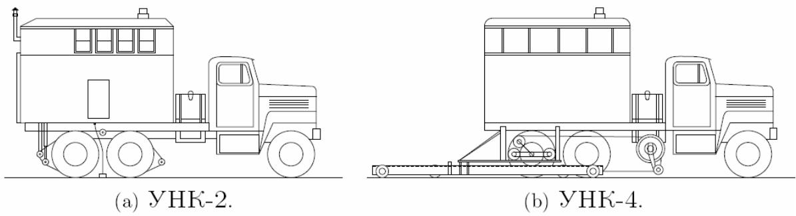
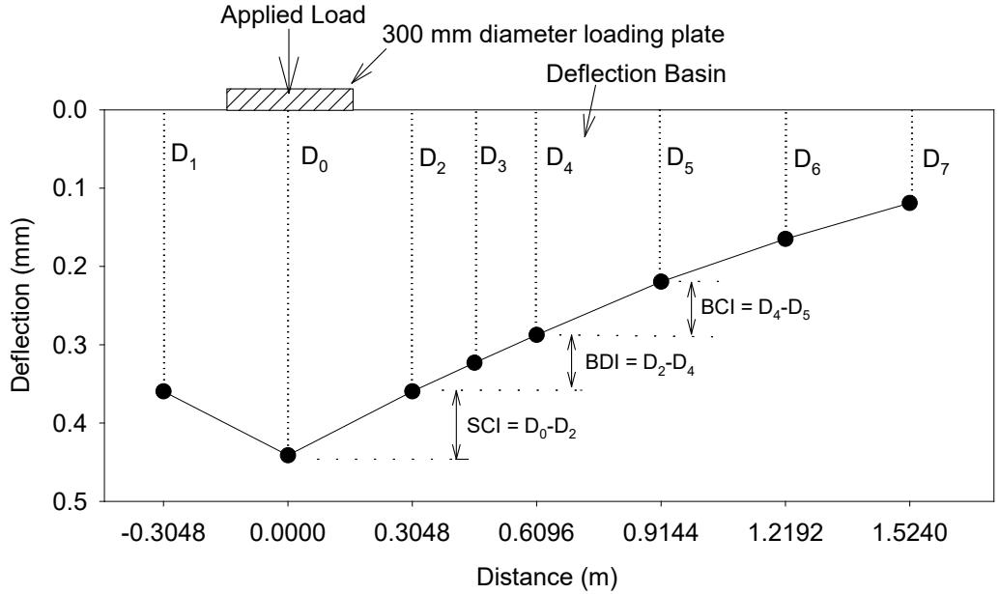
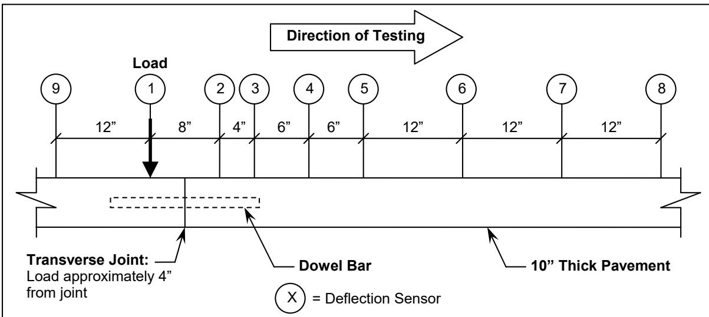
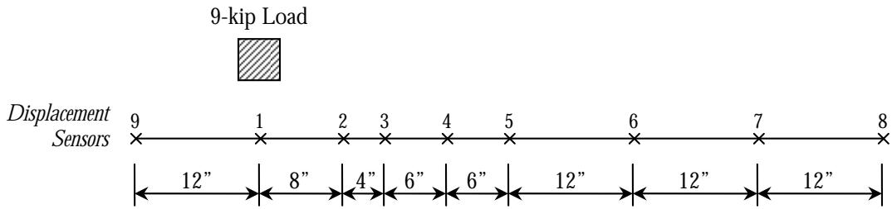
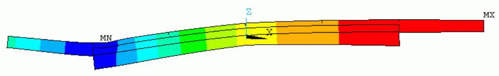
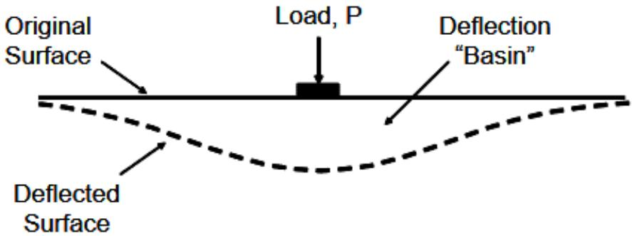
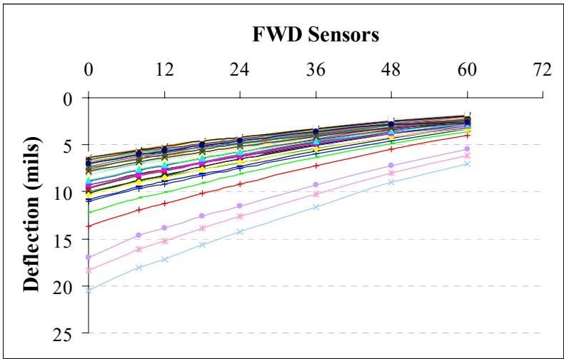
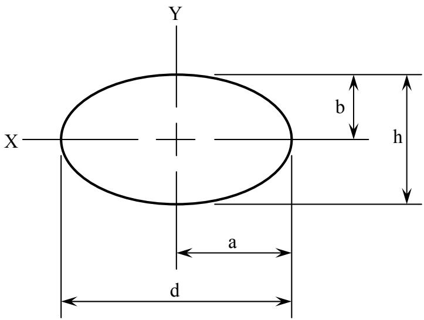
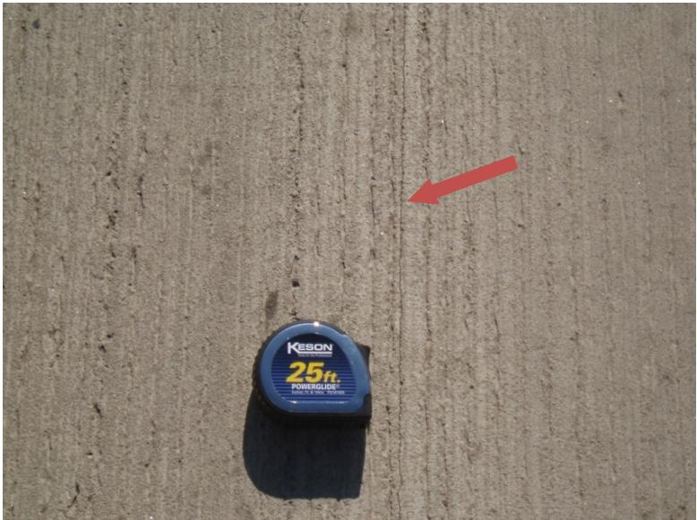
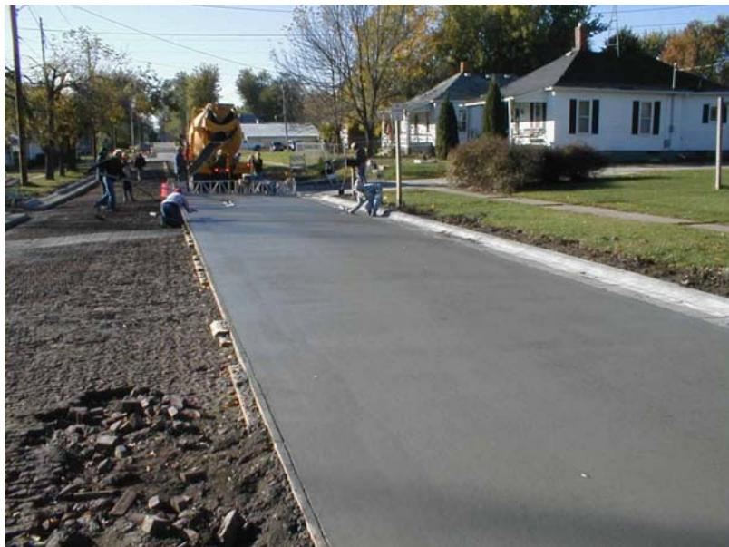

Falling Weight Deflectometer
The Falling Weight Deflectometer is a type of deflection testing that simulates dynamic traffic loading by dropping a calibrated mass onto a rubber pad to generate transient pavement deflections [3]. This impact load more accurately replicates the transient nature of moving vehicle loads compared to steady-state devices, allowing for the measurement of a deflection basin via sensors positioned at various radial distances [8]. As a nondestructive testing device, it applies an impulse load and measures the resulting response using multiple displacement sensors, such as geophones, which capture the shape of the deflection bowl to enable structural analyses and service life estimation [3]. The Falling Weight Deflectometer generates a dynamic load by dropping a mass from a set height, with the applied force measured by a load cell and transmitted through a plate to create a deflection bowl [3]. Extensively used in dowel bar research for evaluating Load Transfer Efficiency across transverse joints, the method can be used to back-calculate joint material and structural properties [2]. FWD deflection data can be integrated with material property surveys to correlate pavement performance rankings and surface conditions with structural response metrics [4]. FWD deflection basins are used to compute the maximum deflection (d0) and the deflection basin AREA, which serve as primary inputs for backcalculating layer moduli of existing AC/PCC pavements [5]. Sensor measurements taken at offsets of 0, 12, 24, and 36 inches from the load plate center are adjusted for temperature effects on asphalt concrete moduli and standardized to a 9,000-pound load [5]. Deflection values producing AREA metrics larger than 36 are excluded from calculations to ensure accurate determination of Portland Cement Concrete (PCC) moduli [5]. The concrete elastic modulus can be determined by dividing the subgrade reaction k-value by two and utilizing the adjusted radius of relative stiffness alongside Euler’s constant (0.57721566490) and a load radius of 5.9 inches [5]. The deflection of the underlying PCC layer is isolated by calculating the compression of the asphalt concrete (AC) layer at the load center and subtracting this value from the maximum FWD-measured deflection [5]. FWD deflection testing is recommended at every 0.2-mile interval in the outer wheel path, with sensors placed between surface cracks rather than across reflective cracks to ensure data integrity [5]. Field FWD deflection values are routinely normalized to a standard reference pavement temperature of 70°F to account for thermal variations in material stiffness during data collection [6]. The Iowa DOT Falling Weight Deflectometer is utilized to determine the support value of existing surfaces and measure joint load transfer characteristics in overlay projects, as demonstrated on the Iowa Highway 13 project where a Foundation Mechanics JILS-20-FWD with a 6-inch load plate and nine sensors was used at a target load of 9,000 pounds [1]. Testing was conducted before construction and planned biannually for five years at transverse joints and slab centers [1]. FWD testing is a distinct stop-and-go activity that takes longer than continuous operations, increases operational costs, and disrupts traffic [7]. Built-in curling cannot be evaluated based only on the pavement surface profile; it must be analyzed in conjunction with pavement reaction data such as deflections [7]. The most considerable deflection on a PCC slab’s surface is commonly seen along the diagonal line between two opposite corners, and due to differences in constraints along the slab, the deflection of a PCC slab in the field is frequently asymmetric [7]. The influence of temperature gradient on pavement deflection is greater than that of moisture gradient [7]. Dowel bars carry weight while allowing horizontal joint movement due to heat-based moisture contraction and expansion, and they aid in keeping slabs aligned horizontally and vertically [7]. Sections with a 1.5-inch dowel bar diameter typically feature 10- or 11-inch thick slabs, whereas 8-inch thick slabs usually utilize 1.25-inch dowel bars [7]. Using thin slabs and long joint spacing tends to increase pavement curling, with upward curling increasing when slab length is increased from 15 to 20 feet [7]. Backcalculation is a specific analytical procedure applied to FWD data, distinct from the device itself, which uses measured deflection basins to estimate pavement layer stiffness properties through various computational methods [8].
Sources (22)
Sub-concepts (1)
Overview of Falling Weight Deflectometer (FWD) Testing
Statistically valid FWD data sets require a minimum of eight to twelve test points for each distinct pavement condition, which includes variations in foundation layer properties, overlay thickness, original pavement thickness, overlay age, and surface condition [9]. To optimize this process, future FWD test locations can be strategically selected by analyzing historic International Roughness Index (IRI) and Pavement Condition Index (PCI) ride quality data, as-built construction plans, and annual falling weight deflectometer results [9].
Equipment Configurations and Historical Variants
Historical stationary impulse load methods, such as the Belgian Curviamètre and Russian UNK-2/UNK-4 Deflectographs, preceded modern FWD systems in nondestructive pavement evaluation [10]. Modern FWD equipment can be mounted on either a vehicle or a trailer [8] and [10], utilizing velocity transducer sensors to measure the dynamic response of the pavement surface to an impulse load [8]. During testing, the loading plate is positioned over the desired location before sensors are lowered to the pavement surface [10]. Specific devices vary in application; for instance, the Dynaflect device applies a static load of 9 kN combined with a dynamic load of 4.45 kN at 8 Hz frequency using steel wheels spaced 0.5 meters apart, which differs from the FWD’s single impulse impact method [10].

The Russian UNK-2 and UNK-4 Deflectographs [10]Different models employ distinct loading specifications, such as the KUAB Falling Weight Deflectometer, which utilizes a loading plate with an 11.81-inch diameter to apply loads ranging from approximately 5,000 to 15,000 pounds across multiple drops per test location [11]. Alternatively, the Kuab FWD utilizes a four-segmented loading plate with a 300 mm diameter, requiring a shape factor of 2 in modulus calculations to account for uniform stress distribution assumptions [12]. To improve efficiency, future FWD system developments aim to reduce costs and implement wireless sensors with a 1–10 mile range, facilitating more efficient data collection during construction applications [1].

FWD deflection sensor setup used for this study and an example deflection basin [12]Testing Protocols, Load Levels, and Locations
FWD testing can apply loads ranging from 3,000 to 50,000 lbf to evaluate pavement properties [13], and protocols may include multiple load levels such as 5,500 lb and 8,300 lb impacts to characterize layer stiffness across different stress states [12]. Other protocols may apply loads in increments of 6, 9, and 12 thousand pounds [14], or use multiple increasing load levels, such as 9,000, 12,000, and 15,000 lbf, on both sides of a joint [13]. Specifically, loads of 6, 9, and 12 kips are recommended for each test site, with the 9-kip load deflection values being specifically suited for pavement overlay design purposes [14], while other protocols may apply levels such as 6, 9, and 12 kips, selecting a 9-kip impact for detailed analysis of joint performance [15]. For composite pavements, configurations often involve applying a 9-kip load at the edge of a transverse joint and near the longitudinal joint of the widening unit to evaluate structural response [5]. To ensure consistent contact and data reliability, protocols often include a seating drop followed by three separate load test drops at each location, typically targeting a load of 9,000 pounds (40.033 kN) [16].
 Cyclic stress-strain curves for subbase + subgrade composite sample [12]
Cyclic stress-strain curves for subbase + subgrade composite sample [12]
The FWD load is typically applied at a specific offset from the pavement edge to evaluate structural response near boundaries, with deflection measurements recorded at multiple locations parallel to that edge; this configuration allows for finite element model calibration by comparing field-measured deflection profiles against analytical predictions of composite pavement behavior [1]. Testing is conducted in the outside wheelpath, positioned two feet from the outer edge of the pavement, with tests performed on multiple transverse joints and mid-panel locations within each lane [16]. Specifically, testing should be performed at midpanel locations in the right wheelpath [14], and is performed at transverse joints and slab centers along the outer wheel path, with test locations established to provide replicates of variable combinations and direction of travel [17]. Sensor configurations often involve placing sensors at specific offsets including -4, 4, 12, 18, 24, 36, 48, and 60 inches from the load plate center [16]. Regarding timing, testing is conducted biannually during spring to exploit weaker subbase conditions due to ground thaw and late summer to assess performance under very dry foundation states [16], or protocols may include conducting drops twice per year, specifically in October and April, to capture pavement performance under varying seasonal conditions [17]. In freeze-thaw climates and areas with expansive soils, FWD testing is recommended during spring and summer seasons to identify critical pavement distresses that must be accounted for in overlay design [18].

Location of FWD loading and deflection sensors [16]
Schematic of FWD deflection sensors [5]Deflection Basin Analysis and Modeling Techniques
When analyzing FWD deflection basins, realistic soil modulus models are used to account for the typical softening behavior of fine-grained subgrade soils, unlike linear elastic layer theory [8]. To facilitate consistent comparison across different test locations and applied forces, deflection values recorded during FWD testing are normalized to a standard contact stress of 9,000 pounds [11]. Deflection basin data is fitted to a second-order equation relating downward deflection in thousandths of an inch to the distance from the load center in inches, a mathematical model that allows for the calculation of relative displacement between slab surfaces at joints [16]. Subgrade voids beneath pavements can also be identified by plotting applied load measurements against corresponding deflection values to determine a ‘zero’ load intercept, with AASHTO identifying an intercept value of 2 mils as critical for void detection [11]. Geostatistical semivariogram analysis can be applied to dense grid FWD data patterns spaced between 0.9 and 3.0 meters to quantify spatial non-uniformity in foundation layer properties [12].
 Contour plots of principal stresses and deflections under uniform and nonuniform subgrade conditions (from White et al. 2005b) [11]
Contour plots of principal stresses and deflections under uniform and nonuniform subgrade conditions (from White et al. 2005b) [11]
In modeling, explicit nonlinear 3D finite element modeling simulates dynamic pavement response to FWD loads, enabling the identification of critical stress distributions around doweled joints subjected to thermal and traffic loading [2]. Deflection basins generated by FWD loading are compared against analytical predictions to calibrate finite element models, which allows for the investigation of interface bond behavior and separation at widening unit interfaces [5]. Finite element models calibrated with FWD data typically assume a soil subgrade reaction modulus (ks) of approximately 85 pci to represent foundation stiffness beneath composite pavements [5]. To simulate subgrade support in models where direct soil testing is unavailable, fictitious thin layers modeled with shell elements can be added beneath the concrete layer; these shell elements represent plates on an elastic foundation, allowing engineers to investigate various soil sub-grade reaction values [1].
 Plan – Various joint spacing configuration Figure 1. Schematics of the composite pavement (not to scale) [5]
Plan – Various joint spacing configuration Figure 1. Schematics of the composite pavement (not to scale) [5]

Example of composite pavement deflected shape (9-kip load) (cross-section view—exaggerated scale) [5]Backcalculation Methods and Artificial Neural Networks (ANN)
FWD deflection basins are utilized to predict critical pavement responses, including maximum stresses and strains, by mapping complex relationships between input parameters and output variables in nonlinear systems [8]. While FWD backcalculation can determine the effective thickness of a pavement section by relating measured deflections to engineering properties using layered elastic or plate theory [13], it is an ill-posed inverse problem where minor deviations between measured and computed deflections can result in significantly different modulus values, often requiring engineering judgment to interpret [10]. Consequently, the accuracy of FWD-based backcalculation results is highly dependent on the quality and integrity of the field deflection data collected during testing [8], and accurate determination of pavement layer stiffness or prediction of critical responses using FWD data requires precise knowledge of layer thickness information at the specific testing points [8]. Furthermore, mechanistic analysis procedures utilize FWD-measured joint deflections as inputs to back-calculate structural properties and stress load transfer at joints, though these models typically ignore the effects of curling and warping [2].

Schematic of the deflection basin under an FWD load plate [13]Backcalculation is the analytical procedure applied to Falling Weight Deflectometer data to inversely determine the elastic moduli of individual pavement layers [8]. This process utilizes deflection basin measurements recorded by the device to evaluate the structural condition of in-service pavements without requiring destructive testing methods [8]. For instance, backcalculation of FWD deflection data has been used to determine layer modulus values for specific projects and correlate them with long-term pavement performance [21].
To address these complexities, the CTRE Project 04-177 (Ceylan et al. 2007) used FWD deflection basins as inputs to over 300 ANN models trained on synthetic data from ILLI-PAVE, ISLAB2000, and DIPLOMAT to predict pavement layer moduli [8]. This ANN approach can analyze 100,000 FWD deflection profiles in under one second — approximately 2 million times faster than traditional finite element-based backcalculation [8]. To ensure robustness against field measurement variability, noise-introduced training (+2%, +5%, +10%) was used [8], and it has been noted that a four-deflection configuration in CFP-ANN models provides slightly better results in terms of standard deviation compared to other configurations [8].

Field data deflection basin after filtering [8]Load Transfer Efficiency (LTE) and Dowel Support Evaluation
In the PCC patching study on US 6, the Iowa DOT FWD was used at a 9,000-lb load level to measure load transfer and maximum deflection at each patch, with testing conducted in the direction of travel at approach and leave sides; all load transfer values exceeded 90% (range 90.3%–99%), which is well above the 75% threshold considered adequate for good joint performance [19]. Load transfer testing involves placing the FWD load on existing concrete near a joint with a sensor on the patch, then moving the load to the second transverse joint of the patch with the sensor on existing concrete, while maximum deflections are recorded under the load at the center of the patch during these tests [19]. Load transfer efficiency (LTE) is calculated by comparing the deflection measured in the unloaded slab against the deflection under the load plate on the loaded slab, with values ranging from 0% to 100% [13]; specifically, joint load transfer efficiency (LTE) is calculated by comparing the deflection under the loading plate on the loaded slab against the deflection of the unloaded slab measured by a sensor positioned approximately 12 inches from the plate center [11]. Load transfer percentages are calculated by dividing the deflection measured at sensor 3 by the deflection at sensor 1 and multiplying by 100, with results averaged across ten joints per lane for each test period [15], and FWD-derived joint LTE values correlate with crack width, where wider cracks exhibit significantly lower load transfer efficiency [13].
In the FHWA Project 5 elliptical FRP dowel study, FWD data was used to calculate the Modulus of Dowel Support (K₀) using a target load of 9,000 lbf, where nine sensors at -4, 4, 12, 18, 24, 36, 48, and 60 inches from the load center measured deflections; K₀ values were calculated using Friberg’s semi-infinite beam equations applied to the measured deflection data, utilizing a second-order equation relating deflection to distance to determine relative displacement at the joint [16]. FWD data can also be used alongside strain gage readings taken during crawl truck traversals to calculate vertical dowel deflections and the modulus of dowel support (K₀) [16]. FWD testing reveals that dowel bars with higher stiffness or greater moment of inertia transfer significantly higher loads across joints, with steel dowels and I-beams showing similar load-transfer magnitudes despite differences in material composition [2]. Under dynamic impact testing, GFRP dowels exhibit higher joint deflections and lower stiffness compared to steel dowels, with performance directly correlating to the material’s shear strength [2], and instrumented dowel bar studies show that forces in fiberglass dowels are lower than those in steel dowels when subjected to FWD loading and environmental cycling [20]. Furthermore, dynamic FWD loading induces considerably lower bending stresses in dowel bars compared to environmental factors, as a 3°C temperature gradient can generate higher moments than a 12,800 lbf impact load [2], and field instrumentation studies using FWD loading demonstrate that moments induced by slab curling are significantly higher than those developed during nondestructive testing [20]. Regarding pavement characteristics, dowel spacing variations influence structural response, with 18-inch spacing yielding lower load transfer levels compared to the equal performance observed at 12- and 15-inch intervals [15], and FWD testing on high-performance concrete pavements indicates that deflections at sealed joints are generally higher than at unsealed joints under dynamic loading [20].

Steel dowel bar detail [16]Pavement Condition Assessment: Rubblized and Cracked Sections
Backcalculation of rubblized pavement layer moduli using ANN-based models requires synthetic databases generated from elastic layer programs to relate structural responses to varying layer thicknesses and moduli values [21]. During the Phase II rubblized pavement study (Ceylan et al. 2008), Iowa DOT’s JILS-20 FWD applied step loads of 6,000, 9,000, 12,000, and 15,000 lbs at three locations per test section [21]. These FWD deflections were input into an ANN-based backcalculation program developed at ISU to determine HMA modulus, rubblized PCC modulus, subgrade modulus, tensile strain at HMA bottom, and vertical strain at subgrade top [21]. This process revealed that the average modulus value for the rubblized PCC layer was 78 ksi, which is comparable to the 65 ksi recommended by a Wisconsin DOT study [21]. Additionally, FWD-derived subgrade modulus values for rubblized sections average 14 ksi, which is slightly higher than the 12 ksi obtained from Dynamic Cone Penetrometer tests at the same locations [21]. The average AASHTO structural layer coefficient calculated for rubblized PCC layers is 0.19, aligning with coefficients used in Arkansas, Michigan, Mississippi, Ohio, and Pennsylvania [21]. Furthermore, FWD testing can identify measurement errors through repeated frequency tests on the same location, as absolute differences in deflections between two tests are typically negligible [21].
Regarding material performance, FWD dynamic deflection measurements on high-performance concrete pavements containing ground granulated blast furnace slag reveal that uncracked sections experience slightly less joint deflection than standard concrete, indicating reduced curvature and support loss [20]. Conversely, in cracked high-performance concrete sections, FWD joint deflections increase after one year of service compared to pre-traffic conditions, likely due to crack-induced structural degradation [20]. The importance of joint tying in composite pavements is highlighted by the fact that cracking at widening joints ranges from 20% to 30% of adjacent overlay slabs, whereas tied joints show no cracking [17]. To manage such conditions, testing frequencies of 0.1 to 0.5 mile increments are recommended specifically to identify and isolate spot locations of moderate to severe pavement distress that may require replacement or strengthening [14].

Pavement where a crack has formed along the longitudinal joint, but remains tight [14] County Roads and City Streets, Slab Thickness Effect (a) [7]
County Roads and City Streets, Slab Thickness Effect (a) [7]
Overlay Design Verification and Structural Analysis
During the I-96 Lansing, MI reconstruction project, FWD testing was conducted to determine the effective composite modulus of subgrade reaction (k₅₅₀) using a 30 kN (6,744 lbf) peak load with a 0.1 s half-sine pulse and nine sensors at 300 mm (12 in.) spacing [12]. Results from this testing showed that field-measured k₅₅₀ exceeded design values by factors of 1.1 to 2.2 across four test sections [12]. Furthermore, FWD-derived elastic modulus values for cement-treated base (CTB) layers can be compared against design inputs, which may reveal that in situ measurements fall below specified targets due to construction variability [12].
To determine the appropriate type of concrete overlay for a roadway, FWD testing is utilized alongside coring and as-built plans to investigate existing pavement layer conditions and thicknesses [18]. Overlay design programs then utilize pre- and post-construction FWD data, with testing conducted at intervals ranging from 0.1 to 1.0 mile increments, to verify that selected overlay thicknesses effectively reduce pavement deflections [14]. Ultimately, deflection data collected before and after PCC overlay construction allows engineers to verify that the reduction in deflections correlates with the impact of the selected overlay thickness [14].
 – US 18 Unbonded Concrete Overlay Improvement [18]
– US 18 Unbonded Concrete Overlay Improvement [18]

Southbound lane overlay paving [6]Alternative Testing Methods and Complementary Field Tests
Various methods are employed to assess the properties and performance of pavement materials and structures. The maturity test method determines a time-temperature factor (TTF) related to the flexural or compressive strength of the concrete, representing the area under the time and temperature curve developed for a given mix; for specific mixes M4 and C4, required TTF factors to meet a target opening strength of 350 psi flexural strength were approximately 398 and 596, respectively [19]. For checking the uniformity of in-place hardened concrete, a rebound test using a Schmidt hammer provides a simple method by measuring the rebound of a spring-controlled mass impacting the surface via a plunger and guide scale used to gauge the hammer rebound number as the mass rebounds against the force of the spring [19]. To evaluate the bond between asphaltic concrete and PCC layers, the Iowa Direct Shear Method is used by pushing a core off at the interface, with tests conducted on cores from 3.5-inch overlay depths to assess critical bonding needs [17]. Additionally, weigh-in-motion devices installed at specific stations record axle counts and weights to calculate average daily Rigid ESALS using VTRIS 6.0 software for traffic loading analysis [17].
In the field of deflection measurement, the Falling Weight Deflectometer is being superseded by rolling wheel deflectometers capable of operating at highway speeds to overcome access limitations on busy roadways and enable continuous, system-wide deflection data collection [22]. While the FWD performs individual test setups, rolling deflectometer prototypes such as the University of Texas device have been developed to move at speeds up to 1.5 mi/h, though further evaluation is needed for highway-speed operation on concrete pavements [22].
FWD testing allows data collection at up to 250 locations per day, significantly reducing operational disruption compared to traditional destructive methods requiring cores, borings, and excavation pits. [8]
SHRP Designation and LTPP Program
The Strategic Highway Research Program (SHRP) designated the Falling Weight Deflectometer as essential equipment for assessing structural capacity within the Long-Term Pavement Performance (LTPP) program. [8]
Related
- Unbonded Concrete Overlay
- Dowel Bar
- Load Transfer Efficiency
- Modulus of Dowel Support
- Backcalculation
- Artificial Neural Networks
- Composite Modulus of Subgrade Reaction
- Deflection Testing
References
- J. K. Cable, M. L. Anthony, F. S. Fanous, and B. M. Phares, "Evaluation of Composite Pavement Unbonded Overlays: Phases I and II," Center for Portland Cement Concrete Pavement Technology, Iowa State University, Ames, IA, Rep. TR-478, 2003. [Online]. Available: https://www.intrans.iastate.edu/research/completed/evaluation-of-composite-pavement-unbonded-overlays-phase-iii-tr-478-hr-1093-proj-2/
- M. L. Porter and R. J. Guinn, Jr., "Synthesis of Dowel Bar Research / Assessment of Dowel Bar Research," Center for Transportation Research and Education (CTRE), Iowa State University, Ames, IA, Rep. HR-1080, 2002. [Online]. Available: https://www.intrans.iastate.edu/wp-content/uploads/2018/03/dowelbarsynthesis.pdf
- S. Schlorholtz, B. Dawson, and M. Scott, "Development of In Situ Detection Methods for Materials-Related Distress (MRD) in Concrete Pavements: Phase 1," Center for Portland Cement Concrete Pavement Technology, Iowa State University, Ames, IA, Rep. CTRE 00-96, 2003. [Online]. Available: https://www.intrans.iastate.edu/wp-content/uploads/2018/03/mrd.pdf
- J. K. Cable and H. Ceylan, "Defining the Attributes of Good In-Service Portland Cement Concrete Pavements," Center for Portland Cement Concrete Pavement Technology, Iowa State University, Ames, IA, Rep. DTFH61-01-X-00042 (Project 9), 2004. [Online]. Available: https://www.intrans.iastate.edu/wp-content/uploads/2018/03/pavement_attributes.pdf
- J. K. Cable, F. S. Fanous, H. Ceylan, D. Wood, D. Frentress, T. Tabbert, S. Y. Oh, and K. Gopalakrishnan, "Design and Construction Procedures for Concrete Overlay and Widening of Existing Pavements," Center for Portland Cement Concrete Pavement Technology, Iowa State University, Ames, IA, Rep. TR-511, 2005. [Online]. Available: https://www.intrans.iastate.edu/wp-content/uploads/2018/03/oreo_design.pdf
- J. K. Cable and J. Williams, "Evaluation of Unbonded Ultrathin Whitetopping of Brick Streets," CTRE, Iowa State University, Ames, IA, Rep. TR-466, 2006. [Online]. Available: https://www.intrans.iastate.edu/wp-content/uploads/2018/03/whitetopping.pdf
- K. Tian, D. King, B. Yang, S. Kim, A. Alhasan, and H. Ceylan, "Impact of Curling and Warping on Concrete Pavement: Phase II," Program for Sustainable Pavement Engineering and Research (PROSPER), Iowa State University, Ames, IA, Rep. TR-749, 2023. [Online]. Available: https://intrans.iastate.edu/app/uploads/2023/06/Impact_of_Curling_and_Warping_Phase_II_w_cvr.pdf
- H. Ceylan, A. Guclu, M. B. Bayrak, and K. Gopalakrishnan, "Nondestructive Evaluation of Iowa Pavements, Phase 1," CTRE, Iowa State University, Ames, IA, Rep. CTRE 04-177, 2007. [Online]. Available: https://www.intrans.iastate.edu/wp-content/uploads/2018/03/nde-pavements.pdf
- D. J. White and P. Taylor, "Automated Plate Load Testing on Concrete Pavement Overlays with Geotextile and Asphalt Interlayers: Poweshiek County Road V-18," National Concrete Pavement Technology Center, Ames, IA, 2018. [Online]. Available: https://www.intrans.iastate.edu/wp-content/uploads/2018/04/Powashiek_CR_V-18_APL_testing_w_cvr.pdf
- B. M. Phares, H. Ceylan, R. Souleyrette, O. Smadi, and K. Gopalakrishnan, "Development of a High Speed Rigid Pavement Analyzer – Phase I Feasibility and Need Study," National Concrete Pavement Technology Center, Ames, IA, Rep. TPF-5(136), 2008. [Online]. Available: https://www.intrans.iastate.edu/wp-content/uploads/2018/03/high_speed_pvmt_analyzer_w_cvr.pdf
- D. White and P. Vennapusa, "Optimizing Pavement Base, Subbase, and Subgrade Layers for Cost and Performance on Local Roads," Concrete Pavement Technology Center and Center for Earthworks Engineering Research, Ames, IA, Rep. TR-640, 2014. [Online]. Available: https://www.intrans.iastate.edu/wp-content/uploads/2018/03/local_rd_pvmt_optimization_w_cvr.pdf
- D. J. White, P. K. R. Vennapusa, H. H. Gieselman, A. J. Wolfe, A. E. Johnson, R. Franz, and L. Zhao, "Improving the Foundation Layers for Concrete Pavements," National Concrete Pavement Technology Center and CEER, Iowa State University, Ames, IA, Rep. TPF-5(183), 2015. [Online]. Available: https://www.intrans.iastate.edu/wp-content/uploads/2021/01/concrete_pvmt_foundations_lessons_learned_and_framework_for_mechanistic_assessment_w_cvr.pdf
- D. King, B. Yang, P. Taylor, and H. Ceylan, "Field Performance of Fiber-Reinforced Concrete Overlays," Institute for Transportation, Iowa State University, Ames, IA, Rep. TR-816, 2025. [Online]. Available: https://www.intrans.iastate.edu/wp-content/uploads/2025/05/field_performance_of_frc_overlays_w_cvr.pdf
- P. D. Wiegand, J. K. Cable, T. Cackler, and D. Harrington, "Improving Concrete Overlay Construction," National Concrete Pavement Technology Center, Ames, IA, Rep. TR-600, 2010. [Online]. Available: http://publications.iowa.gov/20076/1/IADOT_tr_600_Improving_Concrete_Overlay_Construction_2010.pdf
- J. K. Cable, S. L. Totman, and N. Pierson, "Field Evaluation of Elliptical Steel Dowel Performance," Center for Transportation Research and Education, Ames, IA, 2006. [Online]. Available: https://www.intrans.iastate.edu/wp-content/uploads/2018/03/elliptical-steel-dowels.pdf
- M. L. Porter, J. K. Cable, J. F. Harrington, N. J. Pierson, and A. W. Post, "Field Evaluation of Elliptical Fiber Reinforced Polymer Dowel Performance," PCC Center, Iowa State University, Ames, IA, Rep. DTFH61-01-X-00042 (Project 5), 2005. [Online]. Available: https://www.intrans.iastate.edu/wp-content/uploads/2018/03/frp_dowel.pdf
- J. K. Cable, J. L. Morud, and T. R. Tabbert, "Evaluation of Composite Pavement Unbonded Overlays: Phase III," CTRE, Iowa State University, Ames, IA, Rep. TR-478, 2006. [Online]. Available: https://rosap.ntl.bts.gov/view/dot/24065
- G. Fick and D. Harrington, "Concrete Overlay Field Application Program, Final Report: Volume I," National Concrete Pavement Technology Center, Ames, IA, 2012. [Online]. Available: https://apps.itd.idaho.gov/apps/manuals/Materials/Materials%20References/OverlayFieldAppFinalReport.pdf
- J. K. Cable, K. Wang, S. J. Somsky, and J. Williams, "Portland Cement Concrete Patching Techniques vs. Performance and Traffic Delay," Center for Portland Cement Concrete Pavement Technology, Iowa State University, Ames, IA, 2004. [Online]. Available: https://www.intrans.iastate.edu/wp-content/uploads/2018/08/patching_report.pdf
- J. Grove, G. Fick, T. Rupnow, and F. Bektas, "Material and Construction Optimization for Prevention of Premature Pavement Distress in PCC Pavements," National Concrete Pavement Technology Center, Ames, IA, Rep. TPF-5(066), 2008. [Online]. Available: https://www.intrans.iastate.edu/wp-content/uploads/2018/03/mco-final.pdf
- H. Ceylan, K. Gopalakrishnan, and S. Kim, "Rehabilitation of Concrete Pavements Utilizing Rubblization and Crack and Seat Methods (Phase II): Performance Evaluation of Rubblized Pavements in Iowa," CTRE, Iowa State University, Ames, IA, Rep. TR-550, 2008. [Online]. Available: https://www.intrans.iastate.edu/wp-content/uploads/2018/10/rubblization_pavements.pdf
- D. Harrington, R. Rasmussen, D. Merritt, T. Cackler, and P. Taylor, "Long-Term Plan for Concrete Pavement Research and Technology—The Concrete Pavement Road Map (Second Generation): Volume II, Tracks (FHWA-HRT-11-070)," National Center for Concrete Pavement Technology, Iowa State University, Ames, IA, 2012. [Online]. Available: https://www.fhwa.dot.gov/publications/research/infrastructure/pavements/pccp/11070/11070.pdf
Feedback on this page